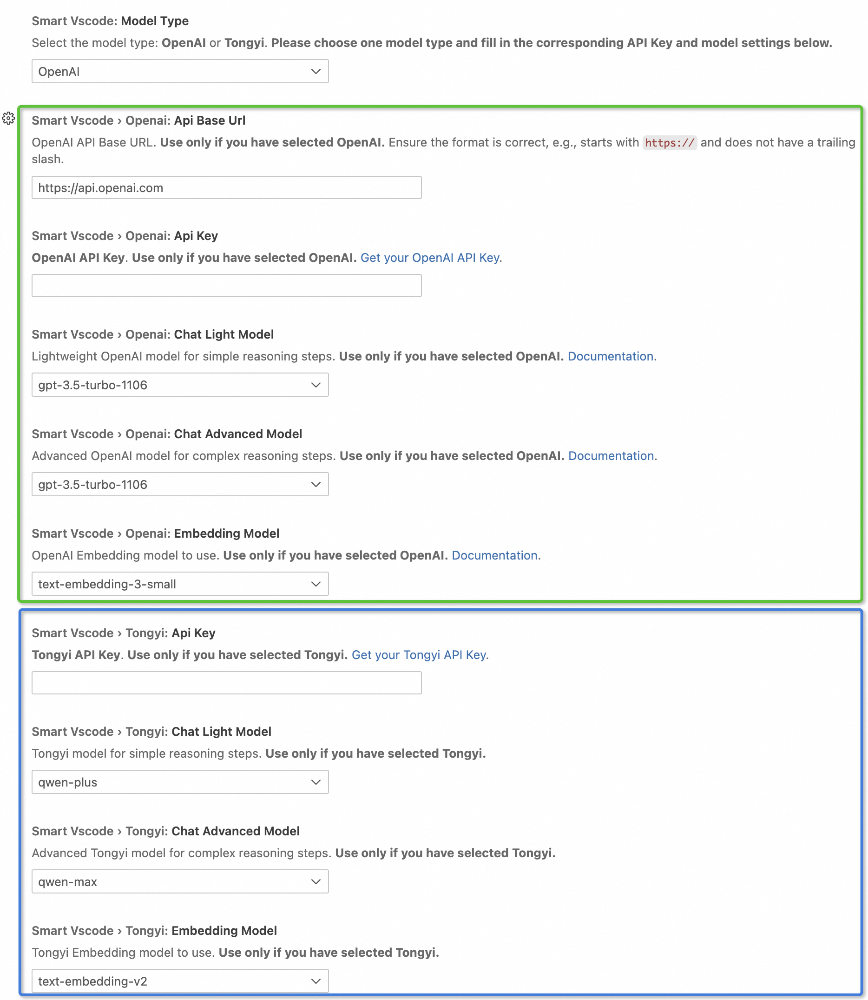

How to use
To begin utilizing this extension, follow these steps:
Installation
Navigate to the Visual Studio Code Extension Marketplace.
Search for and install the extension.
Add Model Config
Once the extension is installed:
Locate the chat window titled “SmartVscode” in your left sidebar, which should resemble the following:

Configure your model settings within the extension:
Access our settings by clicking “Settings” button:
For using OpenAI, select the model type to
OpenAIand modify the settings in the green box as shown in the figure below, including:your
API base urlandAPI keyyour preferred
chatandembeddingmodels
For using Tongyi, select the model type to
Tongyiand modify the settings in the blue box as shown in the figure below, including:your
API keyyour preferred
chatandembeddingmodels
